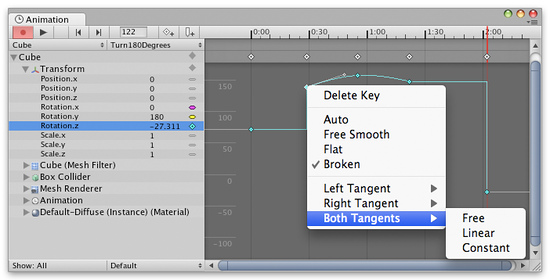

Editing Curves
Curves can be used for many different things and there are several different controls in Unity that use curves that can be edited.
- The Animation View uses curves to animate properties over time in an Animation Clip.
The Animation View. - Script components can have member variables of type AnimationCurve that can be used for all kinds of things. Clicking on those in the Inspector will open up the Curve Editor.

The Curve Editor. - The Audio Source component uses curves to control rolloff and other properties as a function of distance to the Audio Source.

Distance function curves in the AudioSource component in the Inspector.
While these controls have subtle differences, the curves can be edited in the exact same way in all of them. This page explains how to navigate and edit curves in those controls.
Adding and Moving Keys on a Curve
A key can be added to a curve by double-clicking on the curve at the point where the key should be placed. It is also possible to add a key by right-clicking on a curve and select from the context menu.
Once placed, keys can be dragged around with the mouse:
- Click on a key to select it. Drag the selected key with the mouse.
- To snap the key to the grid while dragging it around, hold down on Mac / on Windows while dragging.
It is also possible to select multiple keys at once:
- To select multiple keys at once, hold down while clicking the keys.
- To deselect a selected key, click on it again while holding down .
- To select all keys within a rectangular area, click on an empty spot and drag to form the rectangle selection.
- The rectangle selection can also be added to existing selected keys by holding down .
Keys can be deleted by selecting them and pressing , or by right-clicking on them and selecting from the context menu.
Navigating the Curve View
When working with the Animation View you can easily zoom in on details of the curves you want to work with or zoom out to get the full picture.
You can always press to frame-select the shown curves or selected keys in their entirely.
Zooming
You can the Curve View using the scroll-wheel of your mouse, the zoom functionality of your trackpad, or by holding while right-dragging with your mouse.
You can zoom on only the horizontal or vertical axis:
- while holding down on Mac / on Windows to zoom horizontally.
- while holding down to zoom vertically.
Furthermore, you can drag the end caps of the scrollbars to shrink or expand the area shown in the Curve View.
Panning
You can the Curve View by middle-dragging with your mouse or by holding while left-dragging with your mouse.
Editing Tangents
A key has two tangents - one on the left for the ingoing slope and one on the right for the outgoing slope. The tangents control the shape of the curve between the keys. The Animation View have multiple tangent types that can be used to easily control the curve shape. The tangent types for a key can be chosen by right-clicking the key.

Right-click a key to select the tangent type for that key.
Right-click a key to select the tangent type for that key.
In order for animated values to change smoothly when passing a key, the left and right tangent must be co-linear. The following tangent types ensure smoothness:
- : The tangents are automatically set so make the curve go smoothly through the key.
- : The tangents can be freely set by dragging the tangent handles. They are locked to be co-linear to ensure smoothness.

- : The tangents are set to be horizontal. (This is a special case of .)

Sometimes smoothness is not desired. The left and right tangent can be set individually when the tangents are . The left and right tangent can each be set to one of the following tangent types:
- : The tangent can be freely set by dragging the tangent handle.
- : The tangent points towards the neighboring key. A linear curve segment can be made by setting the tangents at both ends to be .

- : The curve retains a constant value between two keys. The value of the left key determines the value of the curve segment.

Page last updated: 2012-12-04